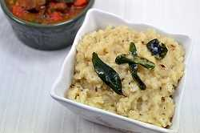

Ingredients
» Rice 1 Cup
» Moong Dal 1/4 Cup
» Black Pepper Powder to taste
» Zera Powder 1 Tbsp
» Ginger Paste 1 Tsp
» Dry Dinger (Sukku) 1 Tbsp
» Heeng 1 Tsp
» Cashew for garnishing
» Margaring/Ghee 2 Tbsp
» Water 6 Cups
» Salt to taste
Instructions
1. Wash rice and dal together and drain nicely.
2. In the Rice cooker heat 1 tbsp ghee.
3. Add rice and dal. Fry till the ghee coats the mixture.
4. Add the rest of the ingredients, except Cashews.
5. Add water. Cover and cook.
6. Keep testing the water level and stir frequently as it has a
tendency to stick to the bottom.
7. When rice gets fully mashed garnish with cashews.